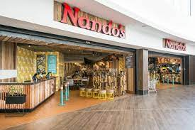
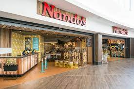

NANDOS
Nando's (/nænˈdoʊz/) is a South African multinational fast food chain that specialises in flame-grilled peri-peri style chicken. ... Founded in Johannesburg in 1987, Nando's operates over 1,200 outlets in 30 countries. Their logo depicts the Rooster of Barcelos, one of the most common symbols of Portuga